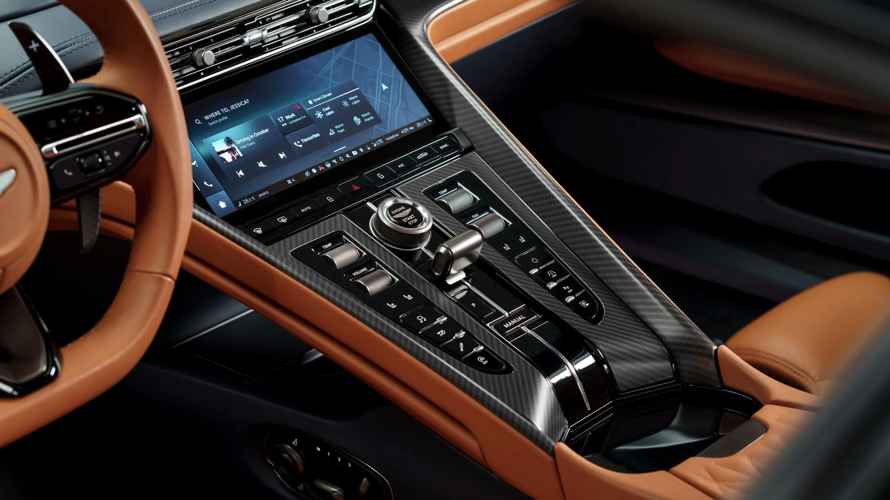
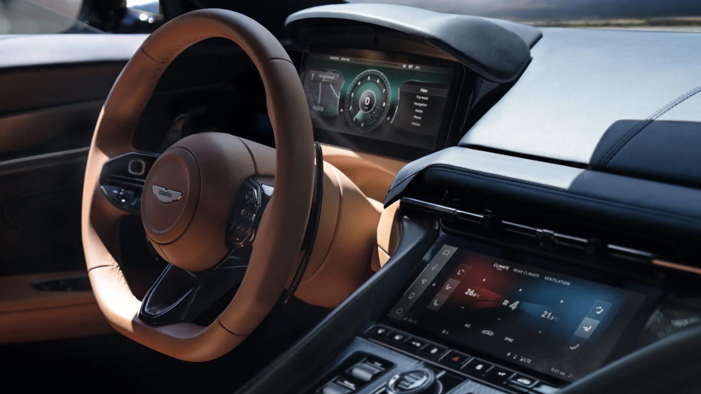

Aston Martin

Overview
I led a UX/UI team of five (two senior designers, two senior researchers and a motion graphics specialist), working alongside an internal product owner, EE feature owners, the interior design team, EE directors and C-suite senior leadership, as well as several third parties and suppliers, to deliver next-generation infotainment and connected car experiences.
The work covered the full model-line refresh, starting with DB12 and continuing through the new Vantage, DBX707 and Valhalla: the end-to-end interior HMI, meaning the central infotainment touchscreen, digital instrument cluster, steering wheel switchgear and centre console controls, plus the connected car experience across native iOS and Android apps. That included the new in-house infotainment system that replaced the previous Mercedes-Benz-sourced system.
We took the HMI and connected car experience from initial concepts and designs to production-ready solutions in 18 months.
Projects
- IVI (cluster and head unit infotainment system) and switchgear
- Over-the-air updates and native iOS and Android app
- Aston Martin website and configurator
Responsibilities
- Lead the UX/UI and research team and activities
- Roadmap definition, backlog management and sprint planning
- Supplier, agency and budget management
- Customer journey and empathy mapping
- Discovery, user needs and pain point analysis
- Competitor and industry benchmarking
- Facilitating cross-functional design thinking workshops
- Solution ideation, conceptualisation and prototyping
- Validation testing (remote and in-person, moderated and unmoderated)
- Design system development and maintenance
- Pixel perfect UI delivery
- UAT testing and sign off

Research and validation
I led the planning and execution of customer research, prototyping, design and user validation testing within the R&D function, with a focus on the HMI and the native iOS and Android apps.
Information architecture, wireframes, interaction flows, prototypes and final UI across the connected car app, website, configurator and infotainment system were all validated through online moderated and unmoderated usability studies, and in-person focus groups at selected dealer locations in the USA.
I ran benchmarking and competitor analysis, independently and with industry partners such as Screens and SBD Automotive, and regularly presented research, design concepts and progress to the C-suite and senior leadership.


Design system
I conceptualised, defined, built and maintained Aston Martin's first digital design system, derived from a new brand refresh, keeping the in-car interfaces consistent with the mobile, desktop and wearable connected experiences.
Working with the business
I managed external agencies, suppliers, partners and contracted UX/UI specialists, acting as the bridge between internal strategy from the C-suite and senior leadership and external execution and delivery.
Monthly alignment sessions with the C-suite, internal department leads and external partners reviewed progress, gathered feedback and estimated upcoming projects.
Website and configurator
With the digital, sales and marketing teams, I worked on the Aston Martin website and the new multi award-winning configurator, including 1st place in the Marketing category at Best of Consulting 2022. More than half of customers use the configurator during their purchase journey, and dealers use it on the 35ft screen at Q New York, the brand's Park Avenue flagship.
Together, the website and configurator capture customers up front, creating their Salesforce CRM profile and Aston Martin customer account from the first touchpoint.
One profile, end to end
With sales and marketing, we carried that single profile all the way through. Once a customer specced and ordered, and the dealer activated their account, their order details and build slot were already waiting in the native app. The same account then carried through to their connected HMI experience when the car was delivered: one seamless ownership experience rather than separate logins across siloed systems.
Gallery